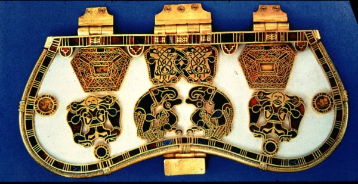

A329: The Art of the
Anglo-Saxon World
Summer 2005

| Dr. Deborah Deliyannis Office: Fine Arts 130 Office hours: by appointment Office phone: 855-8510 email: ddeliyan@indiana.edu |
TuTh
10:30-12:45 Fine Arts 102 Section no. 0100 |
When the Roman legions pulled out of Britain in the early fifth century, the island entered a "dark age", during which groups of people from the continent, known to us collectively as Anglo-Saxons, entered Britain and became its rulers. In this course, we will examine the art, architecture, and archaeological remains from Anglo-Saxon England. We will consider these materials in connection with primary sources of the period, and discuss how the works of art reflect the history of Christianity in England, contacts with other islands and the continent, the repeated waves of invaders, the gradual unification of the island, and finally the the Norman conquest of 1066.
Books
There is no one good textbook on Anglo-Saxon art, and most of the books that are good are out of print (you can find some of them used on Amazon.com). Readings will be taken from a variety of sources; most from books on reserve in the Fine Arts Library (a list can be found at the end of the syllabus), which can sometimes also be found on e-reserves (so identified). You are responsible for doing the readings before the class for which they are assigned; in many cases we will have discussions based on these readings.
Requirements
This is an intensive course that meets twice a week for 2.25 hours each. Each class meeting is therefore the equivalent of more than one week in a semester-long class; the readings and workload will be correspondingly intense. I couldn't give 2.25-hour lectures, and you wouldn't want to sit through one! So the general plan for each class meeting will be approximately half lecture with discussion, and half discussion of one particular object or set of objects. In order to participate effectively in discussion, you will have to have read and bring to class any readings assigned for that meeting.
You will be graded on the following course components:
Attendance and participation 15%
Five quizzes (20 minutes each, 12% each) 60%
5-7-page paper 25%
Attendance will be taken in every class; your attendance grade will be based on both your percentage attending and your participation in class discussions. If you are ill or have an emergency that prevents you from coming to class, please let me know so that it doesn't count against you.
Five quizzes will be given every Tuesday (except the first one) at the beginning of class, covering the material from the previous week. A sixth quiz will be given at the end of the last day of class, covering material from that week. You must take five quizzes; no make-ups will be given. If you take all six, your lowest grade will be dropped.
Each quiz will consist of 2 questions. Each question will have 1 or 2 images accompanied by a short essay question to be answered in ten minutes. In most cases one of the images or image pairs will be something we saw in the previous week, and the other image will be an "unknown" that you will be asked to interpret. The quizzes will require you to (1) remember the works of art and architecture that we explored in the preceding week, and (2) apply the concepts and interpretive strategies discussed in class and/or presented in the readings.
The powerpoint presentations in class will include terms and works of art that you will be expected to know for the quizzes labelled in red; all powerpoints used in class will be posted on Oncourse under "schedule".
Instructions for the paper, which is due in class in the last class period (June 16) can be found at the end of the syllabus. Note that for all written work you are required to include a bibliography of books and electronic resources consulted and to use footnotes or endnotes where appropriate. Plagiarism is a serious offense that will result in automatic failure for the course, and possibly more serious penalties at the university level.
The online version of this syllabus, with active links, can be found at http://www.indiana.edu/~dmdhist
*
* * * * * * *
Part 1: Early
Anglo-Saxon Art
May 10
Celts, Romans, Irish, and Anglo-Saxons
The Sutton Hoo Treasure
Recommended: Martin Carver, Sutton Hoo: Burial Ground of Kings? (1998).
The Wanderer (http://faculty.uca.edu/~jona/texts/wanderer.htm)
May 12
Early Anglo-Saxon architecture: sacred and secular
Yeavering
Eric Fernie, The Architecture of the Anglo-Saxons, ch. 3 (pp. 32-46) *e-res*
Martin Welch, Discovering Anglo-Saxon England, ch. 2 (pp. 14-28) and 4 (43-53) *e-res*
May 17
Quiz 1
Early insular manuscripts
The Lindisfarne Gospels
Carl Nordenfalk, Celtic and Anglo-Saxon Painting, pp. 1-26 and plates.
Janet Backhouse, The Lindisfarne Gospels, chs. 6-8 (pp. 33-86)
Turn the pages of the British Library's digital Lindisfarne Gospels; go to http://www.bl.uk/onlinegallery/ttp/digitisation1.html and select "pinnacle of Anglo-Saxon Art"
May 19
***Meet at the Lilly Library 10:30
am***
Manuscripts (continued)
The Book of Kells
Michelle P. Brown, Anglo-Saxon Manuscripts, pp. 46-53
May 24
Quiz 2
Sculpture and metalwork - small-scale
The Franks' Casket
C. R. Dodwell, Anglo-Saxon Art: A New Perspective, ch. 1 (pp. 1-23) and ch. 7 (pp. 188-215).
L. Webster and J. Backhouse, eds., The Making of England, pp. 101-103.
Have a look at the British Museum's images of the Franks Casket
May 26
Large-scale sculpture and crosses
The Ruthwell Cross
L. Webster and J. Backhouse, eds., The Making of England, pp. 147-155, 239-247
Carol Farr, "Worthy Women on the Ruthwell Cross: Woman as Sign in Early Anglo-Saxon Monasticism," in The Insular Tradition, ed. C. Karkov et al., pp. 45-61. *e-res*
The Dream of the Rood (http://faculty.uca.edu/~jona/texts/rood.htm)
Part 2: Later
Anglo-Saxon Art
May 31
Quiz 3
The Vikings and the Age of Alfred
The Fuller Brooch and the Alfred Jewel
L. Webster and J. Backhouse, eds., The Making of England, pp. 254-289.
June 2
Later Anglo-Saxon Architecture
Winchester Old Minster
Eric Fernie, The Architecture of the Anglo-Saxons, chs. 7-9 (pp. 90-153)
Selections from Aelfric's Life of St. Swithin
June 7
Quiz 4
Later Anglo-Saxon Manuscripts
The Harley Psalter
J. Backhouse, ed., The Golden Age of Anglo-Saxon Art, 966-1066, pp. 46-87
Michelle P. Brown, Anglo-Saxon Manuscripts, pp. 21-45 and 70-77.
June 9: Meet
in the Lilly Library at 10:30
Manuscripts again
The Benedictional of Aethelwold
June 14
Quiz 5
Ivory carving
Victoria and Albert reliquary cross
J. Backhouse, ed., The Golden Age of Anglo-Saxon Art, 966-1066, pp. 88-138
C. R. Dodwell, Anglo-Saxon Art: A New Perspective, ch. 3 (pp. 44-83)
June 16
Paper due
Quiz 6 (at end of class)
The end of the Anglo-Saxon Age
The Bayeux Tapestry
J. Backhouse, ed., The Golden Age of Anglo-Saxon Art, 966-1066, pp. 194-209
C. R. Dodwell, Anglo-Saxon
Art: A New Perspective, ch. 8
(pp. 216-34)
Look at the Bayeux tapestry (you need shockwave for this), at http://www.essentialnormanconquest.com/bayeux/osehncstartmac.html
Books on reserve in the Fine Arts Library
Backhouse, Janet et al, eds. The Golden Age of Anglo-Saxon Art, 966-1066 (Bloomington, 1984). N6763 .G65 1984
Backhouse,
Janet. The Lindisfarne Gospels (London, Phaidon, 1987) ND3359.L5 B3
1987
Brown, Michelle. Anglo-Saxon Manuscripts (Toronto, UTP, 1991). Z8.G72 E53 1991
Carver, Martin. Sutton Hoo: Burial ground of Kings? (Philadelphia: University of Pennsylvania Press, 1998). DA155 .C38 1998
Dodwell, C. R.
Anglo-Saxon art: a new
perspective (Ithaca, NY, Cornell, 1982). N6763 .D62 1982
Farr, Carol. The
Book of Kells (London, British
Library, 1997). ND3359. K4. F37.
1997
Fernie, Eric. The
Architecture of the Anglo-Saxons
(New York, Holmes & Meier, 1983). NA963 .F4
1983
Nordenfalk, Carl. Celtic and Anglo-Saxon Painting (New York, G. Braziller, 1977). ND2940 .N67
Webster, Leslie and Backhouse, Janet, eds. The Making of England: Anglo-Saxon art and culture AD 600-900 (London, British Museum, 1991) N6763 .M354 1991
Wilson, David, ed. The Archaeology of Anglo-Saxon England (London, Methuen, 1976). DA155 .A7
Instructions for the paper
Museum Exhibition Design
As you may know, the IU Art Museum has almost no Anglo-Saxon art in its collection. You are going to submit a proposal for an exhibition of Anglo-Saxon art organized around the theme of your choice. Money is no object (!), and you can assume that it would be possible to borrow any item that you need.
Your paper, then, will take the form of the exhibition proposal, which should have the following parts:
1) A page introducing the theme of the exhibition. Your theme can be anything for which you can collect sufficient objects or images to create a coherent exhibit. It could be iconographical (e.g. animals, Christ, the cross); it could be focused on one material (metalworking, stone sculpture); it could be based on uses of art (monastic art, secular art); it could be something else. In your description of the theme, you should include both what the theme is, and why this particular theme will inform and educate viewers about Anglo-Saxon art and the Anglo-Saxons.
2) A list of seven works to be included in the exhibition. Each item on the list should be accompanied by a brief description of the object, its current location, and an explanation of why it was selected for the exhibit. You may choose any objects you like; good places to start are Leslie Webster and Janet Backhouse, eds. The Making of England: Anglo-Saxon art and culture AD 600-900 and Janet Backhouse, et al, eds. The Golden Age of Anglo-Saxon Art, 966-1066. Note that these are themselves exhibition catalogues, and you MAY NOT simply list a series of items found in one of the sections in one of these books. Another good source of objects is the British Museum website, Compass, which can be found online at: http://www.thebritishmuseum.ac.uk/compass/ (the best thing is simply to search "anglo-saxon").
3) The text for the wall label. This should include historical and cultural background to the theme and discuss the relationship of the objects to one another and to the theme overall.
4) A bibliography of resources consulted.
Your proposal should be 5-7 pages long (double-spaced, 12-point font, 1" margins). Late papers will not be accepted.